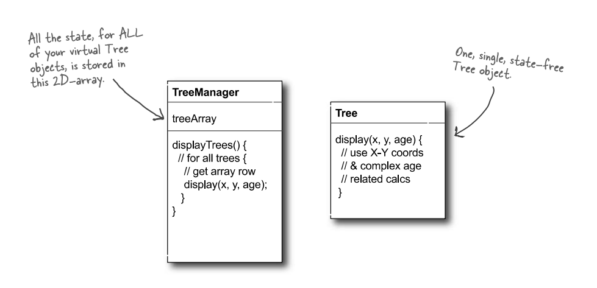

Phương pháp luận lập trình
Bài 7: Mẫu thiết kế OOP
Trường ĐH Công nghệ – Đại học Quốc gia Hà Nội
Nội dung
- Bản chất pattern (Pattern)
- Pattern và phân loại
- Nhóm khởi tạo (Creational)
- Nhóm cấu trúc (Structural)
- Nhóm hành vi (Behavioral)
- Tư duy pattern
Lộ trình bài học
Từ nguyên lý đến lời giải quen thuộc.
- Pattern là gì? Ngữ cảnh, vấn đề, giải pháp.
- Phân loại ra sao? GoF, phạm vi, pattern ngoài OOP.
- Nhóm khởi tạo: Singleton, Factory, Builder, Prototype.
- Nhóm cấu trúc: Adapter, Decorator, Composite, Bridge, Flyweight.
- Nhóm hành vi: Observer, Strategy, Command, Mediator, Visitor.
- Tư duy dùng pattern: K.I.S.S, anti-pattern, khi nào dùng.
1.
Bản chất của
mẫu thiết kế
Mẫu thiết kế là gì?
- Ngữ cảnh: tình huống lặp lại.
- Vấn đề: mục tiêu và ràng buộc.
- Giải pháp: khuôn xử lý.
Các lực tác động (Forces)
Mỗi vấn đề có nhiều lực kéo ngược nhau:
- Mục tiêu: điều ta muốn đạt (linh hoạt, tái sử dụng...).
- Ràng buộc: thời gian, chi phí, hiệu năng, độ phức tạp.
Pattern tốt cân bằng được các lực này — không hy sinh mặt này quá nhiều cho mặt kia.
Ví dụ: Có phải pattern không?
- Ngữ cảnh: Bị khóa chìa trong xe, phải đi làm đúng giờ.
- Vấn đề: Đúng giờ và ít tốn tiền.
- Giải pháp: Đập vỡ kính xe, lấy chìa, lái đi làm.
Kết luận: Không phải pattern: đắt và khó dùng lại.
Vì sao phải học pattern?
- Từ vựng chung: Nói “Observer” là cả nhóm hiểu.
- Tái sử dụng kinh nghiệm: Không phải nghĩ lại từ đầu.
- Tránh bẫy: Bớt lặp lại sai lầm cũ.
Quy tắc số 3
- Pattern được khám phá, không phải phát minh.
- Con số 3 chỉ là một quy tắc kinh nghiệm.
2.
Thế giới pattern
và phân loại
Cấu trúc một pattern
Một pattern chuẩn thường có:
- Tên gọi (Name)
- Mục đích (Intent)
- Động cơ (Motivation)
- Khi nào dùng (Applicability)
- Cấu trúc (Structure)
- Thành phần (Participants)
- Hệ quả (Consequences)
- Mã mẫu (Sample Code)
Sách GoF (1995)
- Design Patterns: Elements of Reusable Object-Oriented Software.
- 4 tác giả: Gang of Four (GoF).
- Phân loại 23 patterns căn bản.

Phân loại 23 Mẫu GoF
| Nhóm | Mục tiêu | Số lượng |
|---|---|---|
| Creational | Tách biệt logic tạo đối tượng. | 5 mẫu |
| Structural | Lắp ráp đối tượng thành cấu trúc lớn. | 7 mẫu |
| Behavioral | Phối hợp hành vi, giao tiếp và luồng điều khiển. | 11 mẫu |
Phạm vi của pattern
| Phạm vi lớp | Phạm vi đối tượng |
|---|---|
| Dựa vào kế thừa. | Dựa vào thành phần. |
| Cố định hơn, thiên về lúc biên dịch. | Linh hoạt hơn, dễ đổi lúc chạy. |
Hầu hết GoF pattern nghiêng về phạm vi đối tượng.
Pattern ngoài OOP
Pattern có ở nhiều lĩnh vực:
- Kiến trúc: xây dựng, đô thị.
- Ứng dụng: kiến trúc hệ thống như MVC.
- Theo miền: hệ nhúng, J2EE.
- Kinh doanh: quy trình nghiệp vụ.
- Tổ chức: cách vận hành nhóm.
- UI: nút bấm, menu, điều hướng.
Pattern và SOLID
Bài 6 nói nên thiết kế theo nguyên lý nào. Bài 7 nói nguyên lý đó thường hiện ra dưới dạng nào.
| Nguyên lý | Pattern thường hỗ trợ |
|---|---|
| OCP | Strategy, Decorator |
| DIP | Command, Strategy |
Ghi chú: Nhiều pattern cũng thể hiện tư duy “ưu tiên composition hơn inheritance”, như Adapter, Bridge, Decorator.
Chốt: Pattern không thay SOLID; pattern thường là cách hiện thực các nguyên lý đó.
3.
Nhóm khởi tạo
Bản chất nhóm khởi tạo
- Giấu logic dùng new.
- Code không phụ thuộc cách tạo đối tượng.
- 5 mẫu: Singleton, Factory Method, Abstract Factory, Builder, Prototype.
1. Mẫu Singleton
- Ý chính: Chỉ có một instance.
- Dùng cho: DB connection, log, cache.
- Nhược điểm: Gần với biến toàn cục, khó test.
Code ví dụ: Singleton
Bí quyết: constructor là private → chặn dùng new từ bên ngoài.
class DatabaseConnection {
private:
DatabaseConnection() {
std::cout << "Kết nối tới Database...\n";
}
public:
DatabaseConnection(const DatabaseConnection&) = delete;
DatabaseConnection& operator=(const DatabaseConnection&) = delete;
static DatabaseConnection& getInstance() {
static DatabaseConnection instance;
return instance;
}
};
// Client:
auto& db1 = DatabaseConnection::getInstance();
auto& db2 = DatabaseConnection::getInstance(); // Cùng đối tượng
2. Factory Method & Abstract Factory
// Factory Method: lớp con quyết định tạo Document nào
class Application {
private:
std::vector docs;
public:
virtual Document* createDocument() = 0; // factory method
void newDocument() {
Document* doc = createDocument();
docs.push_back(doc);
}
};
class DrawApp : public Application {
public:
Document* createDocument() override { return new DrawDoc(); }
};
-
Factory Method
- Tạo một loại sản phẩm.
- Lớp con quyết định tạo gì.
-
Abstract Factory
- Tạo cả họ sản phẩm liên quan.
- Đảm bảo các sản phẩm tương thích.
Code ví dụ: Abstract Factory
class GUIFactory {
public:
virtual Button* createButton() = 0;
virtual Menu* createMenu() = 0;
virtual ~GUIFactory() = default;
};
class WinFactory : public GUIFactory {
public:
Button* createButton() override { return new WinButton(); }
Menu* createMenu() override { return new WinMenu(); }
};
- Factory Method: tạo một sản phẩm.
- Abstract Factory: tạo cả bộ sản phẩm tương thích.
3. Mẫu Builder
- Ý chính: Xây sản phẩm phức tạp theo từng bước.
- Ví dụ: Lập lịch trình nghỉ dưỡng.
- Mỗi ngày là một bước.
- Cùng quy trình, nhiều kết quả.
Code ví dụ: Builder
Fluent Interface — đọc như ngôn ngữ tự nhiên.
// Tạo Pizza mà không cần truyền 10 tham số vào Constructor
Pizza myPizza = Pizza::Builder("Large") // Bắt buộc
.addCheese() // Tùy chọn
.addPepperoni()
.addBacon()
.build(); // Tạo thành phẩm
std::cout << myPizza.getDescription() << '\n';
Lợi ích: tránh constructor quá dài.
Sơ đồ Builder

4. Mẫu Prototype
- Ý chính: Tạo đối tượng mới bằng cách sao chép.
- Dùng khi new quá chậm hoặc tốn kém.
- Ví dụ: Game sinh nhiều quái vật.
- registry.get("orc").clone()
Sơ đồ Prototype

4.
Nhóm cấu trúc
Bản chất nhóm cấu trúc
- Giữ được tính linh hoạt.
- 7 mẫu: Adapter, Facade, Decorator, Proxy, Composite, Bridge, Flyweight.
1. Nhóm bọc đối tượng
| Pattern | Mục đích |
|---|---|
| Adapter | Đổi interface. (Bộ chuyển điện) |
| Decorator | Gắn thêm hành vi. (Topping trà sữa) |
| Facade | Che hệ thống phức tạp. (Nút bật rạp phim) |
| Proxy | Kiểm soát truy cập. (Bảo vệ canh cổng) |
Code ví dụ: Adapter
Tương thích hệ thống MỚI với hệ thống CŨ (Legacy).
// 1. Hệ thống cũ trả về XML
class OldLibrary {
public:
std::string getXmlData() const { return "100"; }
};
// 2. Hệ thống mới chỉ nhận JSON
class NewInterface {
public:
virtual std::string getJsonData() const = 0;
virtual ~NewInterface() = default;
};
// 3. Adapter: cắm "2 chấu" vào "3 chấu"
class XmlToJsonAdapter : public NewInterface {
private:
OldLibrary oldLib;
public:
std::string getJsonData() const override {
std::string xml = oldLib.getXmlData();
return convertXmlToJson(xml);
}
};
Code ví dụ: Decorator
Gắn thêm hành vi (bọc vỏ) mà không dùng Kế thừa.
// 1. Đối tượng lõi
std::shared_ptr myDrink = std::make_shared();
std::cout << myDrink->cost() << "k\n"; // 20k
// 2. Bọc thêm "Sữa"
myDrink = std::make_shared(myDrink);
std::cout << myDrink->cost() << "k\n"; // 25k
// 3. Bọc thêm "Trân châu"
myDrink = std::make_shared(myDrink);
std::cout << myDrink->cost() << "k\n"; // 30k
// Lõi bên trong không biết nó đang bị bọc!
2. Mẫu Composite
- Ý chính: Xử lý đối tượng đơn lẻ và tập hợp giống nhau.
- Ví dụ: File và Folder.
- getSize() trên file: dung lượng file.
- getSize() trên folder: tổng dung lượng bên trong.
3. Mẫu Bridge
- Ý chính: Tách hai chiều thay đổi.
- Kịch bản: Remote (Basic/Advanced) × TV (Sony/RCA).
- Kế thừa dễ làm nổ số lớp.
- Giải pháp: Remote chứa TV.
Sơ đồ Bridge

4. Mẫu Flyweight
- Ý chính: Dùng chung một instance cho rất nhiều “thực thể ảo”.
- Kịch bản: Vẽ 1.000 cái cây.
- Chung: hình dáng, lá.
- Riêng: tọa độ X, Y.
Sơ đồ Flyweight

5.
Nhóm hành vi
Bản chất nhóm hành vi
- Xử lý luồng điều khiển giữa các đối tượng.
- 11 mẫu: Observer, Strategy, State, Command, Iterator, Template Method...
- Trong bài này: đi sâu 4 mẫu tiêu biểu, còn lại nhận mặt.
1. Mẫu Observer
- Ý chính: Một đổi, nhiều nơi được báo.
- Ví dụ: Kênh YouTube và người đăng ký.
- Dùng trong: UI event, pub/sub.
Code ví dụ: Observer
Mô hình Subscribe / Publish (Đăng ký - Lắng nghe).
class YoutubeChannel {
private:
std::vector subs;
public:
void subscribe(Subscriber* s) { subs.push_back(s); }
// Upload video → TỰ ĐỘNG thông báo cho mọi người
void uploadVideo(const std::string& title) {
for (Subscriber* s : subs) {
s->update(title);
}
}
};
// Client:
channel.subscribe(&userA);
channel.subscribe(&userB);
channel.uploadVideo("Review iPhone 15");
// User A và B nhận thông báo ngay lập tức!
2. Strategy & State
| Strategy | State |
|---|---|
| Client chọn thuật toán. | Đối tượng tự đổi hành vi. |
| Ví dụ: đổi cổng thanh toán. | Ví dụ: máy bán nước. |
Chốt: Strategy do client chọn; State do đối tượng tự đổi.
Code ví dụ: Strategy
Đóng gói thuật toán — đổi chiến lược dễ dàng, thay thế if/else dài.
// 1. Interface chung cho thuật toán thanh toán
class PaymentStrategy {
public:
virtual void pay(int amount) = 0;
virtual ~PaymentStrategy() = default;
};
class MomoPayment : public PaymentStrategy { ... };
class VisaPayment : public PaymentStrategy { ... };
// 2. Context: Giỏ hàng
class ShoppingCart {
private:
PaymentStrategy* strategy = nullptr;
public:
void setStrategy(PaymentStrategy* s) {
strategy = s;
}
void checkout(int amount) {
strategy->pay(amount); // Chạy thuật toán đã lắp
}
};
3. Mẫu Command
- Ý chính: Đóng gói yêu cầu thành một đối tượng.
- Hỗ trợ undo/redo, queue.
- Ví dụ: Giấy order trong quán ăn.
4. Mẫu Chain of Responsibility
- Ý chính: Nối các handler thành một chuỗi.
- Kịch bản: Phân loại Email.
- SpamHandler → FanHandler → ComplaintHandler
- Xử lý được thì dừng; không thì đẩy tiếp.
Sơ đồ Chain of Responsibility

Một số mẫu nên biết thêm
| Mẫu | Khi nghĩ đến | Lưu ý |
|---|---|---|
| Interpreter | Ngôn ngữ đơn giản, DSL nhỏ | Dễ nổ số lớp |
| Mediator | Nhiều đối tượng giao tiếp chéo | Gom logic điều phối vào trung gian |
| Memento | Undo, save game, snapshot | Giữ trạng thái mà không phá đóng gói |
| Visitor | Thêm thao tác mới trên cấu trúc ổn định | Dễ làm lộ chi tiết bên trong |
6.
Tư duy pattern
và anti-pattern
Nguyên tắc K.I.S.S
K.I.S.S (Keep It Simple, Stupid): giữ thiết kế đơn giản.
- Đừng dùng pattern chỉ để “trông cho ngầu”.
- Code đơn giản thường là code tốt.
- Code tốt là code người khác còn đọc được.
Khi nào nên dùng pattern?
| Nên dùng khi | Chưa nên khi |
|---|---|
| Giải pháp thô không đủ. | Thay đổi vẫn còn giả định. |
| Điểm mở rộng đã rõ. | Dễ sinh quá nhiều lớp. |
| Đang tái cấu trúc code smell. | Giải pháp đơn giản vẫn chạy tốt. |
Anti-pattern là gì?
Anti-pattern là lời giải tưởng hay nhưng dẫn đến thiết kế tồi.
- Ví dụ: Golden Hammer — có búa trong tay thì nhìn đâu cũng thấy đinh.
- Giỏi một công cụ không có nghĩa là dùng nó cho mọi bài toán.
Ba mức tư duy
- Beginner: Thấy đâu cũng muốn gắn pattern.
- Intermediate: Biết chọn, nhưng còn hay ép mẫu.
- Zen Mind: Bắt đầu từ nguyên lý.
✦
Tổng kết
Nhìn pattern như những lời giải quen thuộc.
Hành trình bài học
- Hiểu pattern: ngữ cảnh, vấn đề, giải pháp.
- Nối với bài 6: pattern là cách hiện thực SOLID.
- Biết ba nhóm: khởi tạo, cấu trúc, hành vi.
- Nhận mặt mẫu quen thuộc: Singleton, Builder, Adapter, Observer...
- Dùng có chọn lọc: đơn giản trước, pattern sau.
6 điều cần nhớ
- Pattern không phải thuốc tiên.
- Lợi ích lớn nhất là từ vựng chung.
- Nhóm khởi tạo lo việc tạo đối tượng.
- Nhóm cấu trúc lo việc ghép đối tượng.
- Nhóm hành vi lo giao tiếp và phối hợp.
- Thường dùng tốt nhất lúc tái cấu trúc.
Câu hỏi thảo luận
- Vì sao Abstract Factory thuộc nhóm khởi tạo?
- Command và Strategy đã đảo ngược phụ thuộc ra sao?